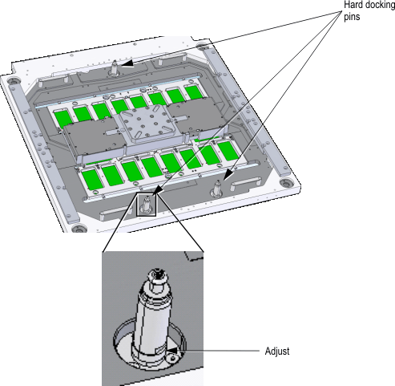
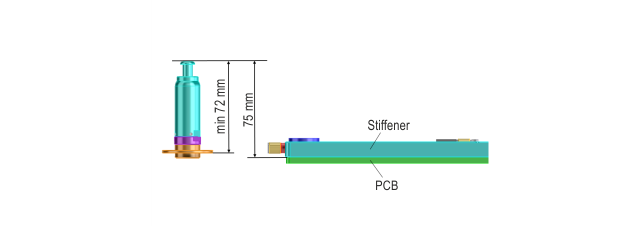

Prober head plate adjustment
Adjust the three hard docking pins on the prober head plate to a height of 75 mm from top of the pin to the DUT board side of the stiffener.

Adjust the height of the docking pins according to the type of the prober as shown below.

- TEL Precio/Nano or Accretech UF3000:
Adjust the docking pin to have a height of 75 mm from top of pin to the DUT board side of the stiffener. This is achieved by increasing the pin size by 3 mm. Any deviation from the figure 3 mm should be minimum but must not exceed ±0.3 mm.
- Semics Opus3:
The docking pins must have a height of 72 mm. This is the minimum height of the pin.
Functional changes
- Introduced in SmarTest 6.5.4